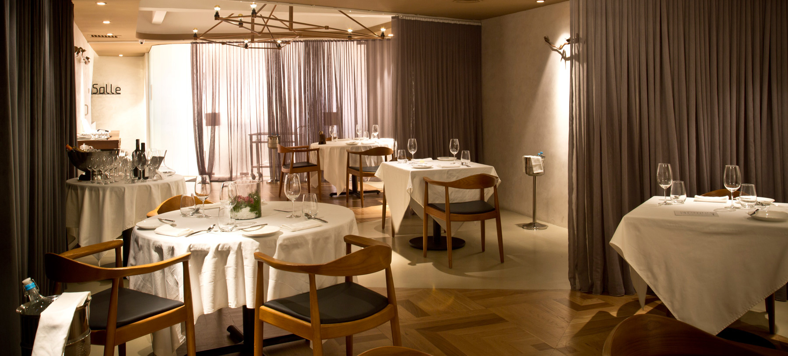
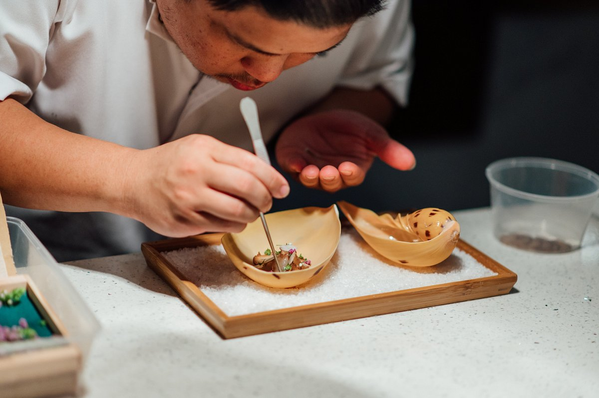
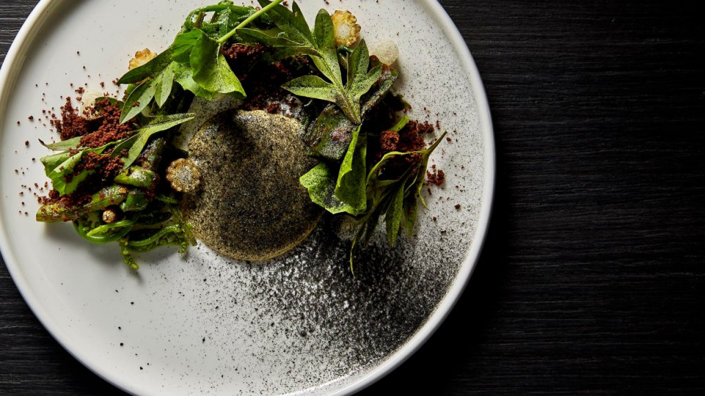
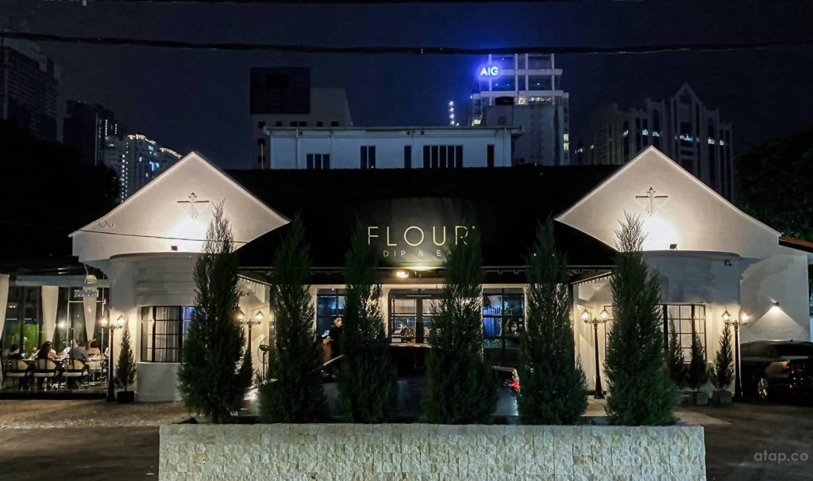
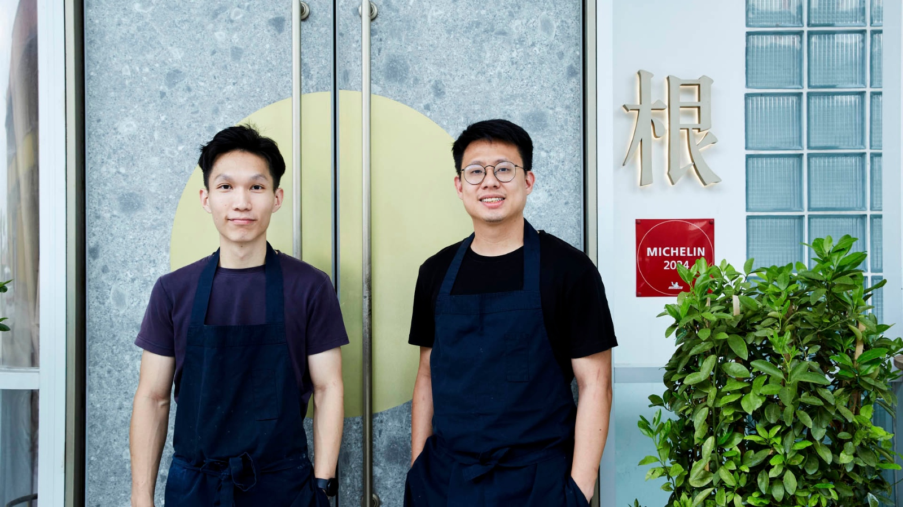

5 MICHELIN Restaurant in Malaysia that offer Vegetarian Menus
Do you know that there are dozen of MICHELIN restaurants in Kuala Lumpur and Penang which serve vegetarian as well as standard tasting menus? Let us see where to get them below.
-
DC. by Darren Chin

One MICHELIN Star
Location: Kuala Lumpur
This restaurant had implement the "less is more" approach where they try to limit their number of elements on the plate no more than three.
They served premium ingredients in which their vegetarian menu include an heirloom tomato tart with mint yogurt chutney, premium Italian pasta selection including genelli pasta in truffle sauce with sea buckthorn just to name a few.
Address : No 44 Persiaran Zaaba, Taman Tun Dr Ismail, 60000, Kuala Lumpur Operating Hours : Tuesday - Sunday (Dinner Only) 6PM - 11PM -
Au Jardin

One MICHELIN Star
Location: Penang
Au Jardin are well-known for offering distinct menu known as The Green Degustation Menu. Their chef insist of using French-anchored techniques but at the same time showcasing Penang heritage and locally sourced Malaysian produce.
The menu offered by Au Jardin include roasted cauliflower cheese of Roquefort and cauliflower sorbet, cauliflower cremeux and yuzu gel and many more.
Address : The Warehouse @ Hin Bus Depot, 125, Jalan Timah, 10150,Georgetown, Penang, Malaysia Operating Hours : Thursday - Sunday (Lunch: 11.30AM - 2.00PM, Dinner: 5.15PM - 10.00PM) -
Akar

MICHELIN Selected Restaurant
Location: Kuala Lumpur
"Akar" in Malay is translated to "root". The chef of this restaurant have the culinary philosophy of "local ingredients, global standards" where he positions its dishes that spotlight on local seasonal produce across Malaysia.
One of the restaurant's signature dish, The Malaysian Harvest, combines local ulam and vegetables cooked using various techniques. Some of the menus offered here include Barley Koji Congee constituted with thin chayote ribbons and a vegetable broth of crown daisy with barley wheat, and many more.
Address : 109, Jalan Aminuddin Baki, Taman Tun Dr Ismail, 60000 Kuala Lumpur, Wilayah Persekutuan Kuala Lumpur, Malaysia Operating Hours : Dinner: Tuesday - Saturday 6PM - 12AM, Lunch: Friday - Saturday 12PM - 3PM -
Flour

MICHELIN Selected Restaurant
Location: Kuala Lumpur
Flour is a restaurant that focusing on expressing Indian flavours using the complexities of French culinary techniques. Their chef have the culinary philosophy of "Redefine, recreate, reinvent".
Some of the dishes served by Flour include "Mother Earth" which consist of Vegetable Farm with the combination of French beans, asparagus, hung curd, Juanita cherry tomatoes and raspberry puree, just to name a few.
Address : FLOUR RESTAURANT, No. 12 & 14, Jalan Kamuning, Off Jalan Imbi, 55100 Kuala Lumpur, Malaysia Operating Hours : Dinner: Monday - Sunday 6.30PM - 9.30PM, Lunch: Friday - Sunday 12.00PM - 1.30PM (Closed on every Tuesday) -
Gen

MICHELIN Selected Restaurant
Location: Penang
The chef-patron of this restaurant gained his mark by serving the purest form of local, seasonal fare, coupled by his devotion to exploring and developing Malaysian ingredients.
Their chef are keen to evoke memories, cultures, and experience into something tangible that diners can be a part of. The environment of the restaurant is having a calm ambience within a glass house featuring Japanese-Scandinavian style furnishings which exude warm hospitality.
Some of the menus offered here include Buah Kulim (jungle garlic), as well as a dish of Cacao Husk, White Corn, and Gula Apong which is often used in steamed corn and pancakes found in street markets.
Address : Unit 6, 8 Gat Lebuh Gereja, 10300 Georgetown, Pulau Pinang. Operating Hours : Lunch: 12.00PM - 3.00PM, Dinner: 6.00PM - 11.00PM